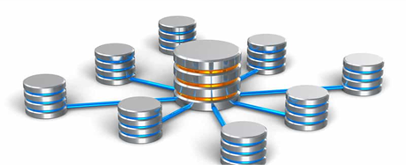

¿QUÉ ES?
Una base de datos es una colección de información que está organizada de manera que se pueda acceder, administrar y actualizar fácilmente. Las bases de datos informáticas suelen contener conjuntos de registros o archivos de datos, que contienen información sobre transacciones de ventas o interacciones con clientes específicos.
En una base de datos relacional, la información digital sobre un cliente específico se organiza en filas, columnas y tablas que están indexadas para facilitar la búsqueda de información relevante a través de consultas SQL o NoSQL. Por el contrario, una base de datos de gráficos utiliza nodos y bordes para definir las relaciones entre las entradas de datos y las consultas requieren una sintaxis de búsqueda semántica especial. En el momento de escribir estas líneas, SPARQL es el único lenguaje de consulta semántico aprobado por el World Wide Web Consortium (W3C).
Normalmente, el administrador de la base de datos proporciona a los usuarios la capacidad de controlar el acceso de lectura / escritura, especificar la generación de informes y analizar el uso. Algunas bases de datos ofrecen cumplimiento ACID (atomicidad, consistencia, aislamiento y durabilidad) para garantizar que los datos sean consistentes y que las transacciones estén completas.
¿POR QUE SE UTILIZA?
Actualmente esta herramienta es utilizada para recopilar todos los datos de una empresa también es usada para desarrollar análisis empresariales, donde las más modernas cuentan con motores específicos para sacar informes complejos de acuerdo a la información que se tiene almacenada.
También se puede decir que es una recolección estructurada de registros o información que se almacenan dentro de un sistema informático, el cual facilitará la buscada de dicha información. Para que esta herramienta sea realmente funcional es necesario que almacene grandes cantidades de registros, permita acceder fácilmente a él, ofrezca seguridad y tanto los cambios de registro como la nueva información pueda efectuarse rápidamente.
Para poder tener un sistema eficiente es necesario hacer uso de programas que sean capaces de gestionar la consulta y la información guardada en la base de datos. Por lo general, estos programas son conocidos como “Sistema de Gestión de una base de datos” o “DBMS”.
Además de todos estos detalles, es importante que estas herramientas sean diseñadas con una alta capacidad de registro, así como con capacidad para recuperar datos en casos que se presenten fallas en el hardware.